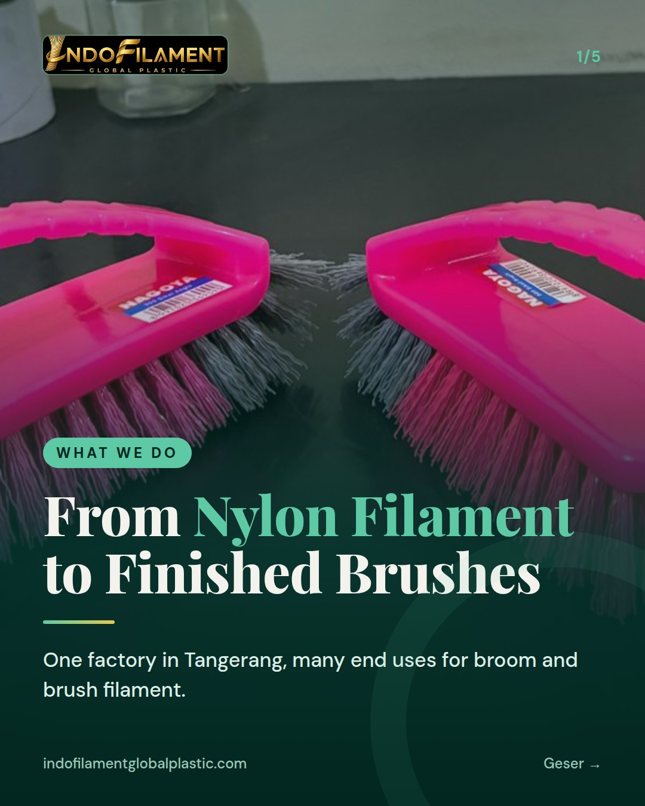
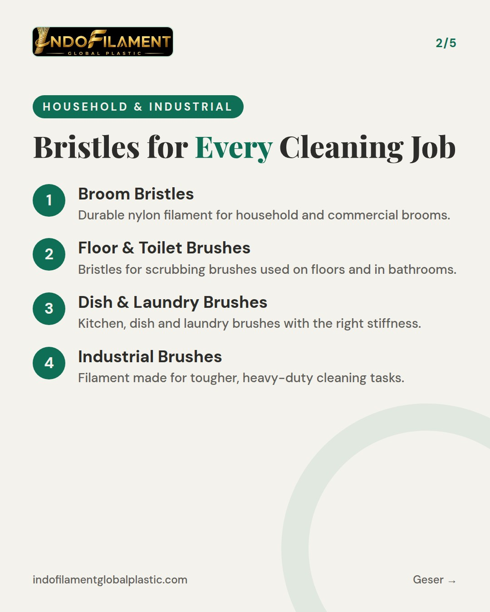
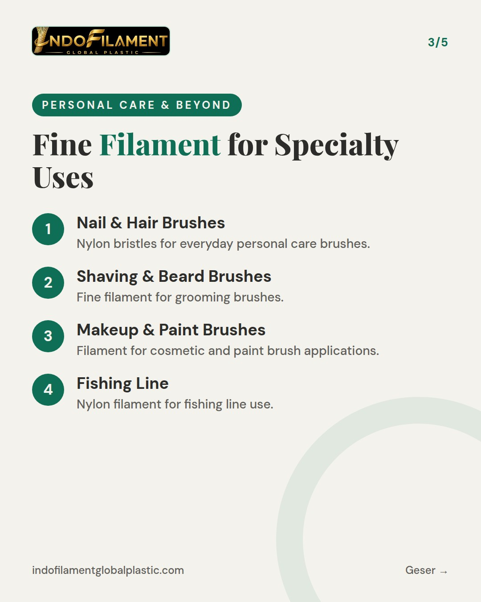
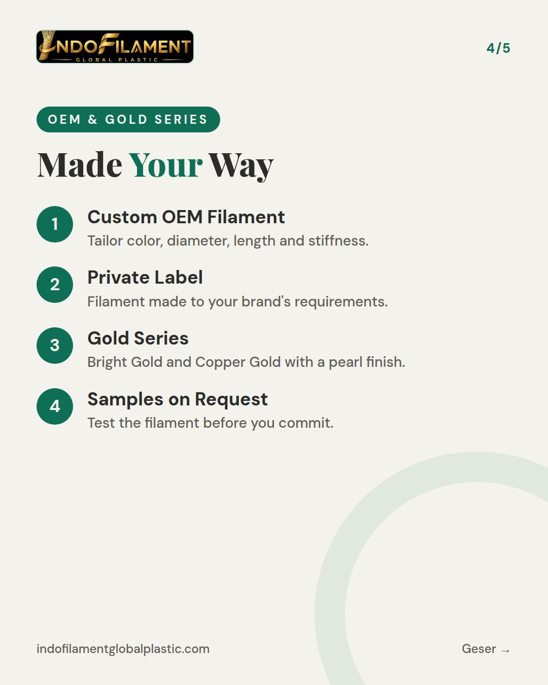
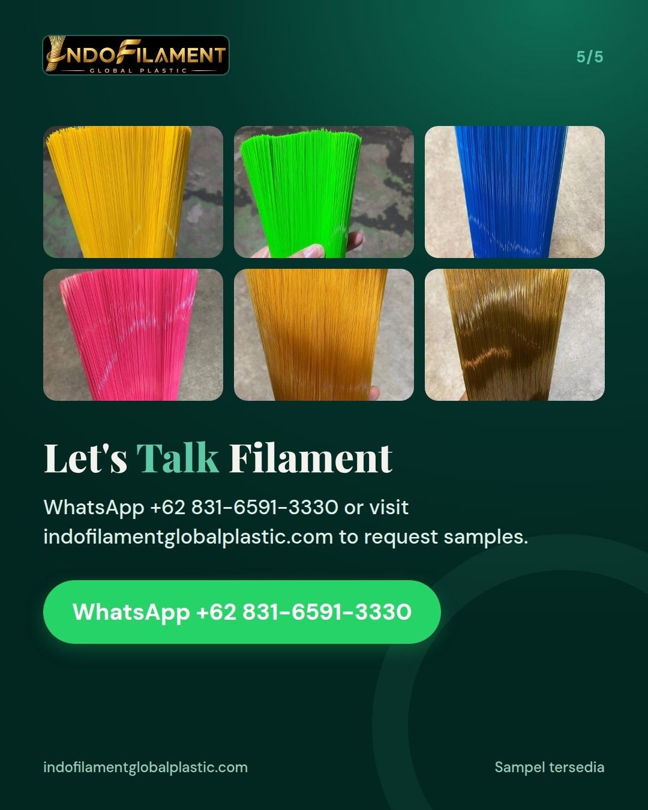

WRITE EVERYTHING IN FULL ENGLISH (all slide text and the whole caption, no Indonesian at all; English hashtags only). Audience: international and local B2B buyers. INTRO SERIES 3 of 3 - WHAT WE DO. Cover kicker: What We Do. Explain what our nylon filament can be made into: broom bristles; brush bristles for floor, toilet, dish/kitchen, laundry and industrial brushes; nail brushes; hair brushes; shaving/beard brushes; makeup brushes; paint brushes; and fishing line. Also custom OEM and private label filament (color, diameter, length, stiffness), Gold Series (Bright Gold and Copper Gold, pearl finish), samples on request. Caption: part 3 of our introduction series, invite buyers to message us on WhatsApp +62 831-6591-3330.





Part 3 of 3 in our introduction series: What We Do. 🏭 You have met our team and seen our factory. Now here is what matters most to buyers: what our nylon filament can become. From our factory in Tangerang, we supply filament for: • Broom bristles • Brush bristles for floor, toilet, dish/kitchen, laundry and industrial brushes • Nail brushes and hair brushes • Shaving/beard brushes and makeup brushes • Paint brushes • Fishing line Need something specific? We produce custom OEM and private label filament, adjusted by color, diameter, length and stiffness. Our Gold Series (Bright Gold and Copper Gold, pearl finish) gives your product range a premium look. Everything is made from recycled plastic raw materials, so performance and sustainability go together. ♻️ Samples are available on request, and you are welcome to visit our factory. 👉 Message us on WhatsApp +62 831-6591-3330 or send us a DM to request samples. Looking for a reliable nylon filament supplier from Indonesia? Contact us for samples and OEM / private label enquiries. We serve both domestic and export markets. #nylonfilament #broomfilament #brushfilament #brushbristles #broombristles #privatelabel #OEMmanufacturer #madeinindonesia #filamentsupplier #brushmanufacturer #recycledmaterials